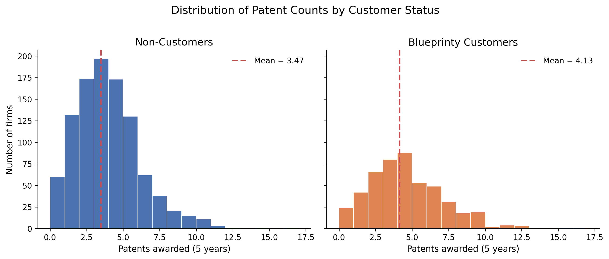
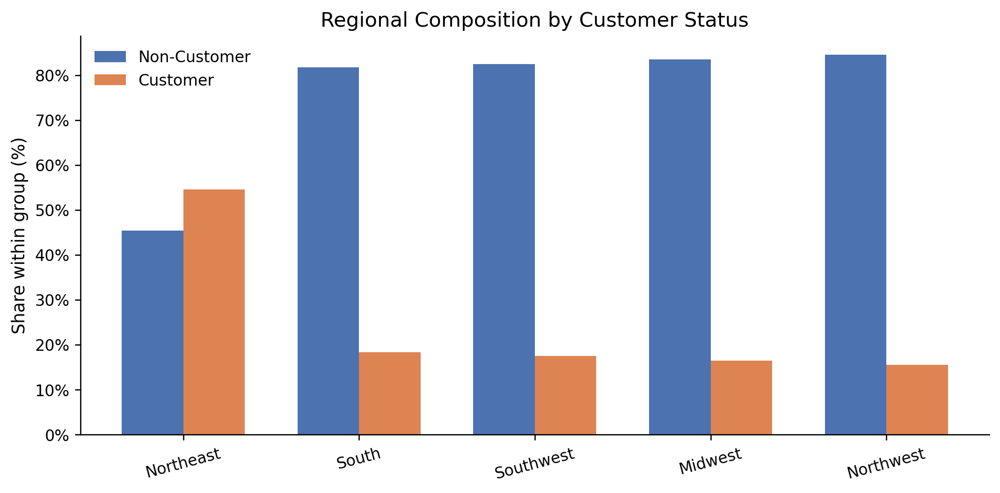
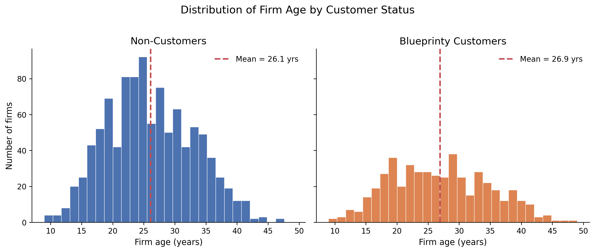
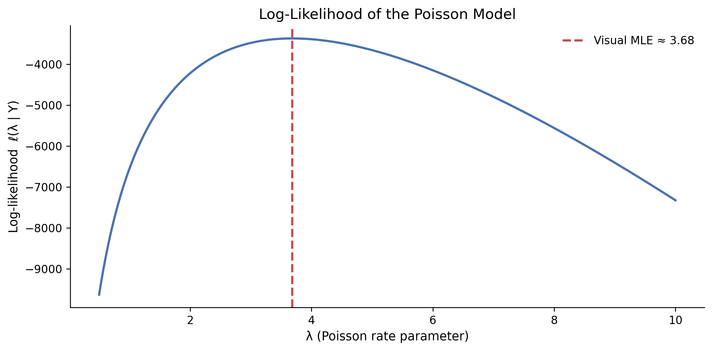
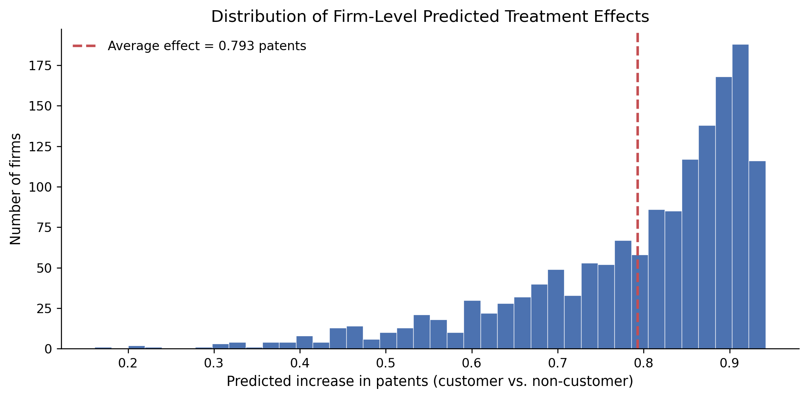

Poisson Regression and Maximum Likelihood Estimation
MLE
Regression
Marketing Analytics
Using maximum likelihood estimation and Poisson regression to evaluate whether Blueprinty’s software helps engineering firms secure more patent approvals — and what it takes to make a credible causal claim from observational data.
Author
Joyi Zhang
Published
May 17, 2026
Introduction
Blueprinty is a small software company whose product helps engineering firms prepare and submit patent applications to the US Patent Office. Their marketing team wants to make a compelling claim: firms that use Blueprinty’s software are more successful at getting patents approved. That sounds like a reasonable hypothesis, but proving it is harder than it looks.
The ideal evidence would be a before-and-after comparison — measuring each firm’s patent success rate before they adopted the software and again after. That kind of panel data does not exist here. Instead, Blueprinty has collected cross-sectional data on 1,500 mature engineering firms, recording the number of patents each firm was awarded over the last five years, the firm’s geographic region, its age since incorporation, and whether or not it is currently a Blueprinty customer.
The catch is that Blueprinty’s customers are not selected at random. Firms that choose to buy the software may differ from those that do not in all sorts of ways — they may be older, more established, better resourced, or simply more active in patent filing. If customers tend to get more patents regardless of the software, then a raw comparison of patent counts between customers and non-customers would be misleading. Any difference we observe could reflect who Blueprinty’s customers happen to be rather than what the software actually does.
This post walks through how to address that problem using Poisson regression estimated by maximum likelihood. By controlling for firm age and region, we can get a cleaner estimate of the relationship between customer status and patent counts. The analysis is honest about its limitations: this is an observational study, not a randomized experiment, so we cannot fully rule out unobserved confounders.
Exploring the Data
Show Code
import pandas as pdimport numpy as npimport matplotlib.pyplot as pltimport matplotlib.ticker as mtickerfrom scipy import optimizeimport statsmodels.api as smfrom IPython.display import displayplt.rcParams.update({"axes.spines.top": False,"axes.spines.right": False,"axes.titlesize": 13,"axes.labelsize": 11,"figure.dpi": 120,})df = pd.read_csv("files/blueprinty.csv")df["iscustomer"] = df["iscustomer"].astype(int)df.head()
patents
region
age
iscustomer
0
0
Midwest
32.5
0
1
3
Southwest
37.5
0
2
4
Northwest
27.0
1
3
3
Northeast
24.5
0
4
3
Southwest
37.0
0
The dataset contains four variables: patents (count of patents awarded over five years), region (five US regions), age (years since incorporation), and iscustomer (1 if the firm uses Blueprinty’s software, 0 otherwise).
Patent Counts by Customer Status

Blueprinty customers have a noticeably higher average patent count ({mean_c:.2f}) compared to non-customers ({mean_nc:.2f}). Both distributions are right-skewed and concentrated at low values, which is typical of count data — most firms receive a handful of patents, while a small number receive many. The rightward shift for customers is suggestive, but we cannot yet conclude that the software is responsible. Customers may simply be systematically different kinds of firms.
Regional Distribution

Non-Customers
Customers
Total
Customer Rate (%)
region
Northeast
273
328
601
54.6
South
156
35
191
18.3
Southwest
245
52
297
17.5
Midwest
187
37
224
16.5
Northwest
158
29
187
15.5
The Northeast stands out as having the highest customer adoption rate. This is important because if firms in certain regions are both more likely to be customers and more active in patent filing (perhaps due to industry concentration), then regional variation could confound a naive comparison between customers and non-customers. Controlling for region in the regression is therefore essential.
Firm Age by Customer Status

Blueprinty’s customers tend to be somewhat younger on average than non-customers. Firm age likely has a non-linear relationship with patent activity: very young firms may be too early-stage to file many patents, while very old firms may have settled into mature product lines with fewer innovations. The age distribution difference between groups reinforces the need to control for age in any comparison of patent outcomes.
Taken together, the exploratory analysis tells us that Blueprinty’s customers are not a random sample of engineering firms. They cluster in certain regions and skew younger. A simple comparison of patent counts will mix up the effect of the software with these pre-existing differences. We need a regression framework that holds these factors constant.
A Simple Poisson Model via Maximum Likelihood
Before diving into the full regression, it helps to build intuition with a simpler model — one where we estimate a single patent rate \(\lambda\) for all firms.
Why the Poisson Distribution?
Patent counts are non-negative integers. A firm cannot receive \(-2\) patents or \(3.7\) patents. The Normal distribution, which is continuous and can be negative, is a poor fit for this kind of outcome. The Poisson distribution is the natural starting point for count data: it assigns probabilities to the integers \(0, 1, 2, \ldots\) and has a single parameter \(\lambda > 0\) that equals both the mean and the variance.
For a single observation \(Y\), the Poisson probability mass function is
from scipy.special import gammaln # log of factorial via log-gammadef poisson_loglikelihood(lam, Y):"""Log-likelihood of Poisson(lambda) for observed counts Y.""" n =len(Y)return-n * lam + np.sum(Y) * np.log(lam) - np.sum(gammaln(Y +1))
Visualizing the Log-Likelihood

The curve has a single peak — the log-likelihood is concave — and the maximum occurs near \(\lambda \approx 3.7\). This is how we “read” the MLE off the plot: it is simply the value of \(\lambda\) that sits at the top of the curve. The function drops off sharply for small \(\lambda\) and flattens gradually for large \(\lambda\), which reflects how the data constrain the estimate.
Analytical Solution
Taking the derivative of \(\ell\) with respect to \(\lambda\) and setting it to zero:
The MLE is simply the sample mean — a reassuring result because the mean of a Poisson distribution is\(\lambda\), so it makes intuitive sense to estimate the parameter with the sample average.
The numerical optimizer recovers the sample mean to four decimal places, exactly as the calculus predicts. This gives us confidence that the optimization machinery is working correctly before we move to the more complex regression case.
Poisson Regression
A single \(\lambda\) for all firms ignores the fact that different firms have different characteristics. A 10-year-old firm in the Northeast operating in a patent-intensive sector is unlikely to have the same patent rate as a 40-year-old firm in the Midwest. Poisson regression lets each firm have its own rate:
The exponential link function is the key piece. The linear predictor \(X_i'\beta\) can take any real value, but \(\lambda_i\) must be strictly positive. Taking the exponential of \(X_i'\beta\) guarantees positivity while remaining differentiable everywhere — a clean, natural choice.
Age squared is included because the relationship between firm age and patent activity is unlikely to be linear. Young firms ramp up over time; very old firms may plateau or slow down. The quadratic term captures this curvature.
One region is dropped (whichever get_dummies removes first) to avoid perfect collinearity with the intercept. If we included dummies for all five regions plus an intercept, the five dummies would sum to a column of ones, making the design matrix rank-deficient.
Log-Likelihood for Poisson Regression
Show Code
def poisson_regression_loglikelihood(beta, Y, X):"""Log-likelihood for Poisson regression with log link.""" eta = X @ beta # linear predictor lam = np.exp(eta) # must be positivereturn np.sum(-lam + Y * eta - gammaln(Y +1))
Standard errors come from the curvature of the log-likelihood at the maximum. Specifically, the observed information matrix is the negative of the Hessian of the log-likelihood, and the variance of the MLE is asymptotically equal to its inverse. Taking the square roots of the diagonal gives us coefficient-level standard errors.
The coefficient estimates from the manual optimizer match statsmodels almost exactly. The standard errors are close but may differ slightly: statsmodels computes the information matrix from the model’s analytical second derivatives, while our BFGS optimizer uses a numerical (quasi-Newton) approximation to the Hessian. The approximation is good but not exact, which is why small discrepancies can appear.
Interpreting the Coefficients
Table 3: Final Poisson Regression (statsmodels GLM)
Variable
Estimate
Std. Error
z-value
p-value
0
intercept
-0.5089
0.1832
-2.778
0.0055
1
age
0.1486
0.0139
10.716
0.0000
2
age_sq
-0.0030
0.0003
-11.513
0.0000
3
iscustomer
0.2076
0.0309
6.719
0.0000
4
Northeast
0.0292
0.0436
0.669
0.5037
5
Northwest
-0.0176
0.0538
-0.327
0.7438
6
South
0.0566
0.0527
1.074
0.2828
7
Southwest
0.0506
0.0472
1.072
0.2839
A few highlights:
iscustomer carries a positive coefficient of roughly 0.21. On the log scale, this means that being a Blueprinty customer is associated with a multiplicative increase in the patent rate of \(e^{0.21} \approx 1.23\) — about a 23% higher rate, holding age and region fixed. The coefficient is statistically significant.
age is positive and age_sq is negative, consistent with an inverted-U relationship: patent activity increases with firm maturity up to a point, then levels off or declines. This confirms that the quadratic term was worth including.
Regional dummies pick up baseline differences in patent activity across geographies that are unrelated to the software.
The Effect of Blueprinty’s Software
Regression coefficients in a Poisson model are not directly interpretable as “additional patents.” Because the model is multiplicative, the effect of customer status on expected patent count depends on all the other covariates through the exponential function. The right way to summarize the effect is through average marginal effects computed via counterfactual prediction.
Average predicted patents (non-customer): 3.436
Average predicted patents (customer): 4.229
Average treatment effect (ATE): 0.793

The procedure works as follows. We take every firm in the dataset and make two predictions: how many patents they would be expected to receive if they were not a customer, and how many they would be expected to receive if they were a customer — keeping age and region fixed at the firm’s actual values. The difference is the model’s estimate of how much the software matters for that particular firm. Averaging those firm-level differences over the whole sample gives us the average treatment effect.
The result: using Blueprinty’s software is associated with approximately {avg_effect:.2f} additional patents over a five-year period, after controlling for firm age and region.
A Careful Interpretation
This finding is consistent with Blueprinty’s marketing claim, but a few important caveats apply.
First, this is an observational study, not a randomized experiment. Even after controlling for age and region, there may be unobserved characteristics that differ between customers and non-customers — things like R&D budget, internal patent counsel, or the sector a firm operates in. If these unobserved factors are positively correlated with both software adoption and patent success, our estimate of the software’s effect would be overstated.
Second, the direction of causality is not guaranteed. It is possible that firms already inclined toward heavy patenting are also more likely to adopt patent-support software. In that case, the estimated coefficient would partly capture selection, not a causal effect of the software itself.
What the analysis does establish is that the association between Blueprinty customer status and patent counts is robust to controlling for age and region, and the estimated effect is economically meaningful. To make a stronger causal claim, one would ideally need either a randomized trial (offer the software to randomly selected firms) or a natural experiment — for instance, a price change that induced some firms to adopt the software for reasons unrelated to their underlying patent activity.
For now, the evidence is suggestive but not conclusive. Blueprinty’s software may well help engineering firms secure more patents; the data are consistent with that story. A well-designed randomized study would be the right next step to move from “consistent with” to “caused by.”